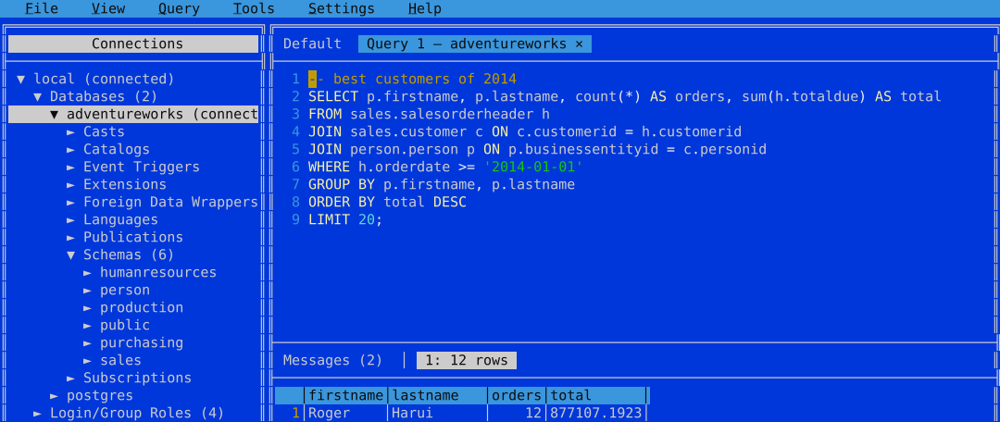
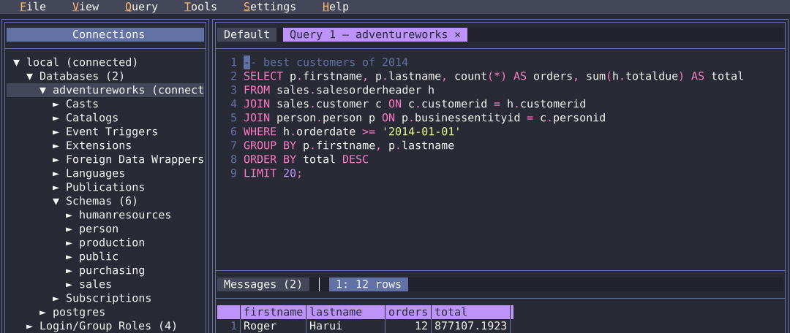

Settings, colours and keys
The Settings dialog, the colour schemes — the six that come with pgtc and your own — and how to give any command another key.
The Settings dialog

Open it with (F9, then Alt+S for the Settings menu, Enter). Change what you like and press Enter on OK; Esc leaves everything as it was. The settings are saved at once and are there the next time you start pgtc.
Appearance
| Setting | Default | Meaning |
|---|---|---|
| Colour scheme | Classic | The colours of the whole program. See Colour schemes. The screen changes as soon as you pick a scheme in the list, so you can try them. |
| ASCII frames (+ - |) | off | Draw all frames and lines with the plain characters + - = | instead of line-drawing characters. See below. |
Tree and connections
| Setting | Default | Meaning |
|---|---|---|
| Connect timeout (s) | 10 | How long pgtc waits for a server to answer when connecting, in seconds (1 – 3,600). Raise it for servers behind a slow VPN. |
| Show system objects in the tree | off | Also show pg_toast and temporary schemas, template databases, pg_* roles and the objects of extensions. Applies to the tree and to Find object. |
Query tabs
| Setting | Default | Meaning |
|---|---|---|
| Rows per batch | 1000 | How many rows of a result are fetched at a time (1 – 1,000,000). See Large results. A larger batch means fewer pauses when scrolling, a smaller one a quicker first screen. |
| Cancel wait (s) | 5 | After a cancel request, how long pgtc waits before it offers to close the connection (1 – 3,600). See Cancelling. |
| Auto commit in new query tabs | on | The Auto commit switch a new query tab starts with. |
| Auto rollback on error in new tabs | off | The Auto rollback on error switch a new query tab starts with. |
| Ask to save query tabs when closing | on | Off: a query tab with unsaved text closes without the Save them? question — the text is discarded. Also when quitting and disconnecting. |
The two Auto… settings are only the starting values for tabs you open from now on. Tabs that are already open keep their own switches ( menu).
Clipboard
| Setting | Default | Meaning |
|---|---|---|
| System clipboard | on | Use the clipboard of the machine pgtc runs on, for copy and paste with other programs. |
| OSC 52 clipboard (terminal, SSH) | on | When copying over SSH, also send the text to your terminal, which puts it into the clipboard of the machine you sit at. |
Both are explained in Copy and paste. Turn OSC 52 off if your terminal prints strange characters when you copy; turn the system clipboard off if you do not want pgtc to touch it.
A number outside its range, or a text where a number belongs, gives an error on OK; the dialog stays open so you can correct it.
ASCII frames

pgtc draws its frames with line-drawing characters (║ ═ ╔ │ ─ ┌). A few terminals, fonts and old serial
consoles do not have them and show letters, question marks or gaps instead. With
ASCII frames checked, the outer frames are drawn with + = |, the inner lines and
the frames of dialogs and menus with + - |. Everything else stays the same.
If your screen is so garbled that you cannot find the dialog: quit pgtc and set the option in the settings file —
ascii_frames = true under [ui] (see below).
Colour schemes

| Scheme | Look | Needs |
|---|---|---|
| Classic (default) | The look of Midnight Commander: blue panels, cyan highlight, grey dialogs. | Only the 16 basic colours — works on every terminal. |
| Dark | Light text on a dark background. | 16 colours. |
| Light | Dark text on a light background. | 16 colours. |
| Terminal default | Uses your terminal's own background and text colour, and only its 16 colours — pgtc looks like the rest of your terminal. | Nothing. The choice for limited terminals and for terminals with a colour theme you like. |
| Tokyo Night | The “Night” palette of the Tokyo Night theme. | A terminal with true colour (24-bit): Windows Terminal, iTerm2, kitty, WezTerm, Alacritty, GNOME Terminal, Konsole and most modern ones. |
| Dracula | The palette of the Dracula theme. |




- The 16-colour schemes look a little different in every terminal, because each terminal has its own idea of “blue” or “cyan”. The pictures show the colours of Windows Terminal.
- If Tokyo Night or Dracula show wrong or blocky colours, your terminal (or the SSH client, or
screen/tmuxin between) does not pass true colour: use one of the first four. - In every scheme the highlighted letters of menus and buttons are also underlined, and the text cursor is drawn in reverse, so both stay visible whatever your terminal does with colours.
Your own colour scheme
A colour scheme is a small text file. Put a file ending in .toml into the themes folder
and it appears in the list of the Settings dialog (restart pgtc if it does not show up):
| Platform | Themes folder |
|---|---|
| Linux | ~/.local/share/pgtc/themes |
| macOS | ~/Library/Application Support/pgtc/themes |
| Windows | %APPDATA%\pgtc\themes |
A scheme only has to say what it changes. Everything it does not mention is taken from Classic. This complete file makes “Classic with a green editor”:
name = "Green editor"
[editor]
text = "lightgreen on black"
keyword = "white on black bold"
string = "lightyellow on black"
number = "lightcyan on black"
comment = "darkgray on black italic"
selection = "black on lightgreen"
line_number = "green on black"Writing a colour
Every entry is "text colour on background colour", optionally followed by one or more of
bold, dim, italic, underlined, reversed.
| Colour | Write |
|---|---|
| The 8 normal colours | black red green yellow (or brown) blue magenta cyan lightgray |
| The 8 bright colours | darkgray lightred lightgreen lightyellow lightblue lightmagenta lightcyan white |
| The terminal's own colour | default |
| An exact colour (true colour terminals) | #rrggbb, for example #ffb86c |
What can be coloured
| Section | Entry | Colours |
|---|---|---|
[core] | normal | The object tree and the background of the window. |
border | Frames and lines. | |
title, title_focused | The Connections title of the tree, without / with the focus. | |
selected | The cursor row of the tree and of lists, with the focus. | |
selected_unfocused | The cursor row while the focus is elsewhere. | |
hint | Quiet texts such as loading…. | |
[menu] | normal, hotkey | The menu bar, the pull-down and context menus, the autocomplete list; the highlighted letters. |
selected, selected_hotkey | The highlighted item. | |
disabled | Items that cannot run now. | |
[dialog] | normal, title, hotkey | Dialogs: text, title, highlighted letters. |
focus, focus_hotkey | The button or list row that has the focus. | |
input, input_focus | Input fields, without / with the focus. | |
disabled | Parts that cannot be used. | |
shadow | The shadow of a dialog. | |
[error] | normal, title | Error messages. |
[tabs] | bar, inactive | The tab strip; tabs that are not shown; the file bar. |
active | The shown tab while its part has the focus. | |
active_unfocused | The shown tab while the focus is elsewhere. | |
[status] | normal | The status row of a tab. |
window | The bottom line of the screen. | |
[editor] | text, line_number | Plain text; the line numbers. |
keyword, string, number, comment, quoted_ident, operator | The parts of SQL. | |
selection | Selected text. | |
[grid] | header, row_number | The column names; the row numbers. |
cursor, null | The cell cursor; [null]. | |
[messages] | error, notice, info | The lines of Messages. |
[dashboard] | graph | The graphs. |
blocked, blocking, idle_in_transaction, tagged | Session rows. | |
slow, very_slow | Durations from 1 s / from 10 s; warning values of the summary. |
The easiest start: the schemes that come with pgtc are in the folder themes of the source
code. Copy dracula.toml, give it a new name, and change colours.
Choose colours that differ clearly: text needs contrast with its background, and the cursor row, inputs and the focused button must stand out from their surroundings.
Changing keys: keymap.toml
Every command of pgtc has a name and can be given any key. Key changes are written into a file,
keymap.toml, in pgtc's configuration folder:
| Platform | File |
|---|---|
| Linux | ~/.config/pgtc/keymap.toml |
| macOS | ~/Library/Application Support/pgtc/keymap.toml |
| Windows | %APPDATA%\pgtc\keymap.toml |
The exact path on your machine is shown at the end of . The file does not exist until you create it; it is read when pgtc starts.
The file
# keymap.toml — only what differs from the built-in keys
[editor]
execute = ["F5", "Ctrl+Enter"] # two keys for one command
commit = "Alt+C" # a command that has no built-in key
rollback = "Alt+R"
[results]
export_result = "Alt+X"
[tree]
quick_search = "Alt+S" # only this key; Ctrl+S no longer searches
drop_object = [] # no key at all: F8 does nothing in the tree- The file has one section per part of the window; a line gives a command its key or keys in that part.
- A line replaces all built-in keys of that command in that section. To keep a built-in key and add one, list both.
[]takes all keys away from a command.- Commands you do not mention keep their built-in keys.
Sections
| Section | Keys work when the focus is in… |
|---|---|
[global] | any part — unless that part uses the key for something else. |
[tree] | the object tree. |
[editor] | the SQL editor, an object definition, a statement pane. |
[results] | the result grid and Messages of a query tab. |
[dashboard], [profiler], [db_stats] | the list of that tab. |
[dialog] | dialogs, menus and lists. |
pgtc looks for a pressed key first in the section of the focused part, then in [global]. That is why
Ctrl+R can refresh in the tree and hide the results in a query tab: it is bound to different commands in
[tree] and [editor].
A command used in several parts must be bound in each: to run with Ctrl+Enter from the editor and
from the results, write execute = … under [editor] and under [results].
Key names
| Kind | Write |
|---|---|
| Modifiers | Ctrl, Alt, Shift, joined to the key with +: Ctrl+Shift+Z |
| Function keys | F1 … F24 |
| Named keys | Esc Tab Enter Space Backspace Delete Insert Home End PageUp (PgUp) PageDown (PgDn) Up Down Left Right |
| Letters, digits, signs | The character itself: Ctrl+E, Alt+1, Alt+/, Alt+. |
Upper and lower case do not matter (ctrl+e = Ctrl+E). Key names are texts: always in quotes.
Command names
The names — execute, commit, quick_search, … — are in the last column of the
Keyboard reference, together with the section each one belongs to. The commands that
have no built-in key are listed at its end.
If something is wrong in the file
- An unknown section, command or key name is skipped; the rest of the file is used. pgtc tells you at start what it skipped.
- If you give the same key to two commands of one section, the later one has it — and you are told.
- If the file cannot be read as TOML at all (a missing quote), pgtc starts with the built-in keys.
After a change, restart pgtc and check with F1 or : both show your keys.
Choose keys your terminal really delivers. Many terminals keep some combinations for themselves — see If a key does not work. Keys with Alt and the function keys are the safest choice.
The settings file
Everything the Settings dialog saves — and your saved connections — is in settings.toml, next to
keymap.toml. You normally never touch it. A few settings exist only there:
| Section and key | Default | Meaning |
|---|---|---|
[editor] tab_width | 4 | How many columns wide a tab character is shown. |
[editor] line_numbers | true | Show line numbers in the editor. |
[ui] tree_width | a third of the window | The width of the object tree in columns. Written when you drag the tree's border. |
[export] format, csv_separator, csv_bom | csv, comma, false | The last choices of the export dialog. |
The [ai] section holds what saves (AI
assistant): enabled, protocol (openai-compatible or
anthropic), base_url, model and effort (default,
low, medium, high, xhigh, max), and one
[[ai.models]] block (id, name) for each model the dialog read from the
provider. The API key itself is never in this file; it
is in ai_key next to it.
[ui]
color_scheme = "Dracula"
show_system_objects = false
ascii_frames = false
[query]
batch_rows = 1000
auto_commit = true
auto_rollback = false
cancel_wait_secs = 5
ask_save = true
[clipboard]
system = true
osc52 = true
[connection]
connect_timeout_secs = 10
[editor]
tab_width = 2
line_numbers = true
[ai]
enabled = true
protocol = "anthropic"
base_url = "https://api.anthropic.com"
model = "claude-sonnet-5-5"
effort = "default"
[[servers]]
name = "local"
host = "localhost"
port = 5432
database = "postgres"
username = "postgres"
ssl_mode = "prefer"
[[servers]]
name = "production"
host = "db.example.com"
port = 5432
database = "adventureworks"
username = "app"
ssl_mode = "verify-full"
ssl_root_cert = "/etc/ssl/our-ca.pem"
ai_not_allowed = true- Edit the file only while pgtc is not running — pgtc writes it when you change a setting or a connection.
- A key that is missing has its default. A key pgtc does not know is ignored.
- Each
[[servers]]block is one saved connection. Passwords are never in this file; they are in.pgpass. - To move your setup to another machine, copy
settings.toml,keymap.toml, and thethemesanddeveloper_templatesfolders. All locations are listed in Reference → Files and folders.
The other items of the Settings menu
| Item | What it does |
|---|---|
| Provider, model and API key of the AI assistant (F8). | |
Runs every installation step, like pgtc --setup, and shows the result of each step in a message. | |
Copies the developer templates that come with pgtc into your templates folder, like pgtc --install-templates. Asks before overwriting when the folder exists. | |
| Shows the path of the templates folder. (pgtc cannot open a file manager for you — least of all over SSH.) |